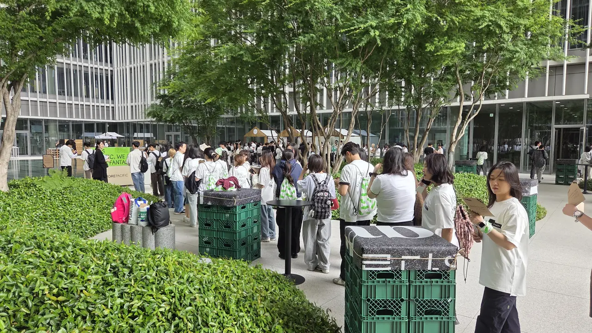
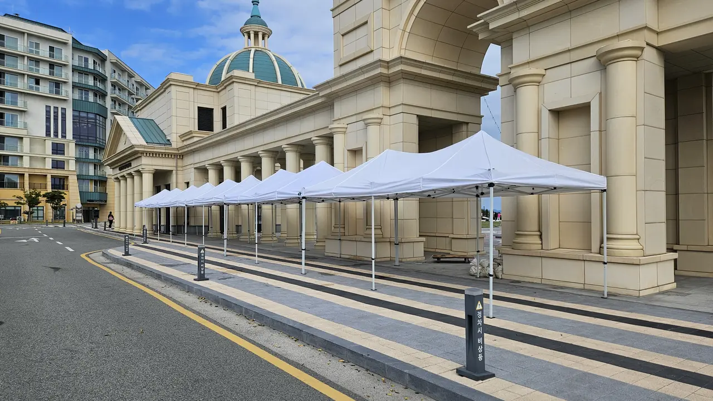

안전 · 2026년 11월 17일
행사 당일 비상 상황 대응 안전 교육에서 다루는 것
행사 비상 상황 대응의 기본은 혼자 해결하려 하지 않고 정해진 순서로 알리고 안내하는 것입니다. 현장 인력이 의료인이나 소방 전문가가 아닌 이상, 해야 할 일은 위험을 알리고, 신고하고, 사람을 안전한 쪽으로 안내하는 것입니다. 이 글은 일반 상식 수준에서 화재, 위급상황, AED 사용을 어떻게 다루는지 정리했습니다. 이 글은 교육 자료를 대신하지 않습니다.

- 비상 상황의 핵심은 알리기, 신고하기, 안내하기 세 가지 동작이다
- 현장 인력이 혼자 판단하지 않도록 보고 체계와 대피 방향을 미리 정한다
- 화재, 위급상황, AED 사용은 안전 교육에서 함께 다룬다
- 행사 전에 비상구, AED 위치, 연락 방법을 한 장에 적어 공유한다
행사 당일 비상 상황 대응이 중요한 이유
행사에서 비상 상황은 드물게 생기지만 생겼을 때의 대응 속도가 결과를 크게 바꿉니다. 갑자기 다친 사람, 갑작스러운 화재 경보, 인파가 한쪽으로 쏠리는 상황은 현장 인력이 처음 맞닥뜨리는 일일 때가 많습니다. 그래서 행사 전에 순서를 정해 두고 그 순서를 인력이 알고 있는 것이 중요합니다.
지노컴퍼니는 인력 교육에서 안전 교육으로 화재 시 대처, 위급상황 대처, AED 활용법을 다루고, 맞춤 컨설팅에서는 위기 상황 대응 매뉴얼을 다룹니다. 아래 내용은 그 가운데 행사 담당자가 알아 두면 좋은 일반 상식 수준의 정리입니다.

기본 동작은 알리기, 신고하기, 안내하기
| 동작 | 내용 | 누가 하는가 |
|---|---|---|
| 알리기 | 가까운 책임자에게 상황과 위치를 바로 알립니다 | 발견한 인력 |
| 신고하기 | 필요하면 119 같은 긴급 연락처에 신고합니다 | 책임자 지시를 받은 인력이나 책임자 |
| 안내하기 | 주변 사람을 안전한 방향으로 이동시키고 접근을 막습니다 | 주변 안내 인력 |
| 기록하기 | 발생 시각과 상황을 짧게 적어 둡니다 | 현장 책임자 |
여기서 핵심은 내가 혼자 해결하지 않는다는 점입니다. 비상 상황에서 인력이 자리를 비우거나 혼자 판단하면 다른 곳이 비게 됩니다. 알리고, 정해진 역할을 지키는 것이 가장 안전합니다.
화재와 대피
불이 났을 때 가장 먼저 해야 할 일은 불을 끄는 것이 아니라 큰 소리로 알리고 사람들이 안전한 쪽으로 이동하게 하는 것입니다. 인력은 비상구 위치와 대피 방향을 알고 있어야 하고, 사람을 안내할 때는 서두르지 않고 한 방향으로 정리해 이동하도록 해야 합니다.
- 행사 전에 비상구와 대피 방향을 도면에 표시하고 인력에게 보여 줍니다.
- 통로나 비상구 앞에 물건이 놓여 있지 않은지 확인합니다.
- 대피 안내 문구를 짧게 정해 두고 인력이 같은 말을 하도록 합니다.
- 안전하다고 판단되기 전에는 초기 진화를 시도하지 않고 책임자 지시를 따릅니다.

위급 상황과 AED
사람이 갑자기 쓰러지거나 의식이 없을 때는 즉시 책임자에게 알리고 119에 신고하는 것이 우선입니다. 주변 사람이 모이지 않도록 접근을 정리하고, AED가 행사장에 있다면 가까운 곳에서 가져오는 역할을 따로 맡깁니다.
AED는 기기가 음성으로 사용 순서를 안내합니다. 그래서 인력이 사용법을 외우고 있어야 한다기보다 AED가 어디 있는지, 누가 가져올지, 어떻게 사용 안내가 나오는지를 알고 있어야 합니다. 지노컴퍼니의 안전 교육에도 AED 활용법이 포함됩니다.
- 쓰러진 사람을 발견하면 큰 소리로 알리고 책임자에게 연락합니다.
- 책임자나 지시받은 인력이 119에 신고합니다.
- AED가 있다면 가져오는 사람을 지정합니다.
- 주변 접근을 정리하고 기기 음성 안내가 나오면 그 안내를 따릅니다.
- 구급대가 오면 상황과 위치를 알려 주고 통로를 비워 둡니다.
위 내용은 일반 상식 수준의 정리이며, 실제 응급처치는 교육을 받은 사람의 안내에 따라야 합니다.
행사 전에 만들어 둘 한 장 자료
행사 당일 현장 인력이 꺼내 볼 수 있는 한 장짜리 비상 자료를 만들어 두세요. 아래 항목만 있으면 충분합니다.
- 비상구와 대피 방향이 표시된 행사장 도면
- AED와 응급 물품 위치
- 현장 책임자 연락 방법과 대체 연락 방법
- 긴급 연락처(119 등)와 신고할 때 알릴 정보(행사장 주소, 현재 위치)
- 인파가 몰릴 때 안내할 방향과 문구
행사 전 최종 점검 미팅에서 이 자료를 인력과 함께 읽어 보고, 필요하면 인력 관리 시스템에서 보는 안전 교육과 연결해 점검하세요. 비상 대응 매뉴얼이 필요한 행사라면 견적 문의로 행사 개요를 알려 주세요. 인력 서비스는 인력 서비스에서 볼 수 있습니다.
자주 묻는 질문
현장 인력이 직접 응급처치를 해도 되나요?
교육을 받은 사람의 안내에 따라야 합니다. 일반 인력의 기본 역할은 알리고, 신고하고, 주변을 안전하게 정리하는 것입니다. 구체적인 범위는 사전 교육과 주최 쪽 방침에 따라 정합니다.
AED가 없는 행사장에서는 어떻게 하나요?
행사장에 AED가 있는지, 가장 가까운 곳이 어디인지 사전에 확인해 두세요. 위치를 모르는 상태로 행사를 시작하지 않는 것이 중요합니다.
비상 상황 연습은 어떻게 하나요?
실제 상황을 가정해 순서를 말로 점검하는 롤플레이가 효과적입니다. 지노컴퍼니는 인력 교육에서 실전 시뮬레이션과 롤플레이를 활용합니다.